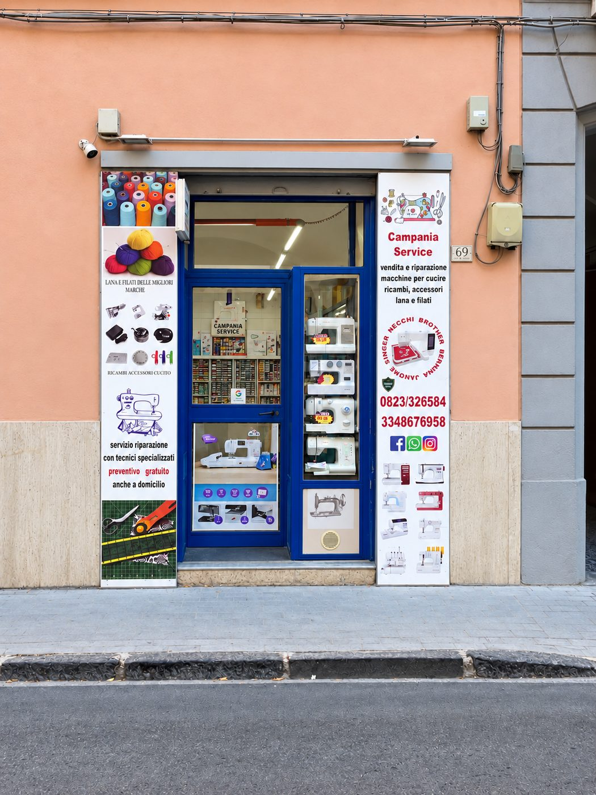
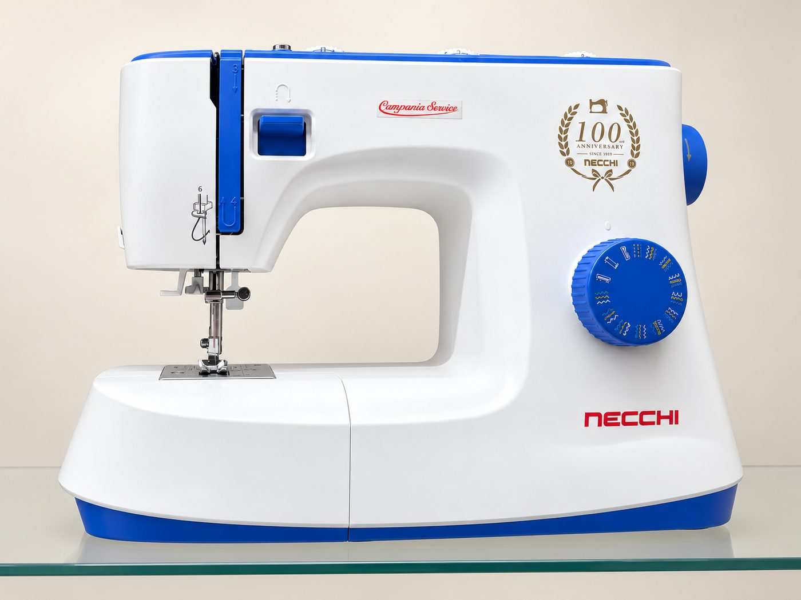

Tutto nello stesso negozio
Macchine per cucire, filati, ricambi, accessori e riparazioni: non devi girare più negozi.
Controllo gli orari
Trovi macchine per cucire, filati e riparazioni nello stesso negozio, in Via Giuseppe Verdi 69.

Campania Service è un negozio di Caserta, in Via Giuseppe Verdi 69, dove si vendono e si riparano macchine per cucire. Qui trovi anche ricambi, accessori, lana e filati.
Puoi scegliere una macchina tra quelle in negozio o tra le usate garantite, trovare il filato per il tuo progetto oppure portarci la tua macchina da riparare.
Passa a trovarci!


Macchine per cucire, filati, ricambi, accessori e riparazioni: non devi girare più negozi.
Preventivo gratuito, anche a domicilio.
Macchine per cucire usate, vendute con garanzia di 12 mesi.
Tra le marche, Necchi, Singer, Janome, Brother e Bernina.
Ti aspettiamo in negozio!
Via Giuseppe Verdi 69, Caserta. Aperti dal lunedì al venerdì 9:00–13:00 e 16:30–20:00, il sabato 9:00–13:00.